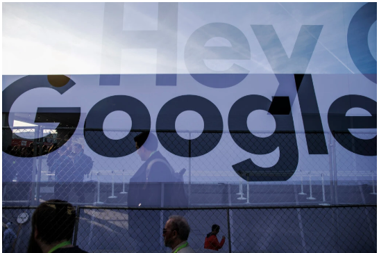

1. Tech
U.S.Accuses Google of Illegally Protecting Monopoly
A victory for the government could remake one of America's most recognizable companies
and the internet economy that it has helped define.

washington-The Justice Department accused Google on Tuesday of illegally protecting its monopoly over search and serch advertising, the goverment's most significant challenge to a tech company's market power in a generation and one that could reshape the way consumers use the internet.
In a much-anticipated lawsuit, the agency accused Google of locking up deals with giant partners like Apple and throttling compertition through exclusive business contracts and agreements.
Google's deals with Apple, mobile carriers and other handset makers to make its search engine the default option for users accounted for most of its dominant market share in search, the agency said, a figure that it put at around 80 persent.
"For many years,"The agency said in its 57-page complaint,"Google has used anticompetitive tactics to maintain and extend its monopolies in the markets for general search services, search advertising and general search text advertising-the cornetstones of its empire."
The lawsuit, which may stretch on for years, could set off a cascade of other antitrust lawsuits from state attorneys general.
About four dozen states and jurisdictions, including New York and Texas, have conducted parallel investigationts against the company's grip on technology for online advertising.
Eleven state attorneys general, all Republicans, signed on to support the federal lawsuit.
Attorney General William P. Barr had spoken publicly about the investigation for months.
He urged the agency to file a case by the end of September, prompting resistance from some of its lawyers who wanted more time and complained of political motivations.